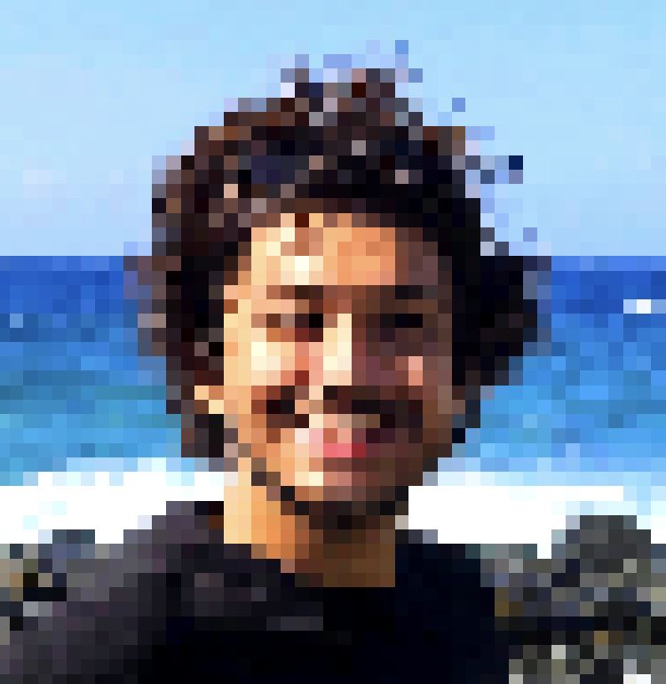

Episode IV
After years of careful procrastination, and a few moments of inspiration, I’ve finally decided to bring this website to life. It’s a personal corner of a galaxy not so far away where I can share my life, research, portfolio, projects, posts, photos, and random thoughts—all built from scratch, bit by bit.
I didn’t aim for anything grandiose, just a place that feels like me. A little professional, a little goofy, and a lot of personal touch.

Welcome to
PhD Candidate - Astrophysics | Computer Science
Press to begin